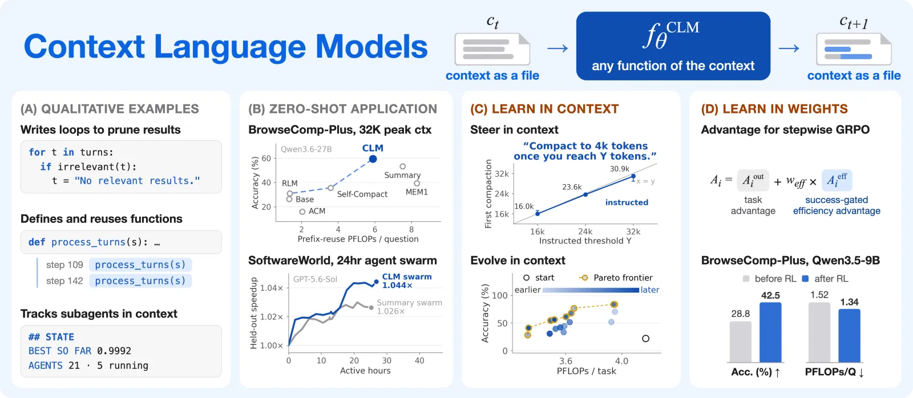
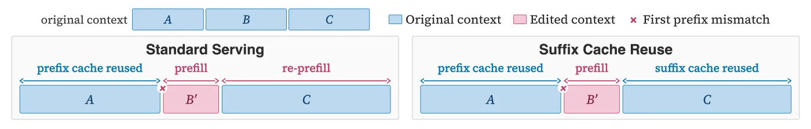

In one line: Handing the model its own context as a file to rewrite makes context management model behaviour that a prompt can steer and RL can train. Zero-shot it pays off with a strong model: Qwen3.6-27B on BrowseComp-Plus scores 59.4% against 53.3% for summarisation (+11.4% relative) with 21.5% fewer calculated FLOPs and ties on TerminalBench 2.1, in single runs; with a 9B model it is not the best method. After RL the clear gain is cost (38.8% fewer FLOPs): accuracy is 0.4 points above an equally trained summary harness, and the abstract's +47.6% is against CLM's own untrained start.
Scoped on 26 October 2026. The database Takeaway as fetched said CLMs beat harness-side context management and cited +47.6% after RL; the 19 October rewrite still said it beats it at lower cost in zero-shot runs without limits. The paper's own evidence: one run per setting, a tie on TerminalBench 2.1, Self-Compact ahead of CLM on BrowseComp-Plus with Qwen3.5-9B (Figure 19), FLOPs calculated rather than measured, and the +47.6% measured against CLM's untrained start (Table 2). The Notion property needs the same edit.
How far to trust it: Believe the design (the live context as a file the model edits) and the FLOPs accounting, which reproduces to the digit. Treat the size of the accuracy wins as provisional: one run per setting, CLM alone gets retries, free editing turns and budget nudges, the RL win over a trained summary harness is 0.4 points, and on the 9B model zero-shot Self-Compact beats CLM on BrowseComp-Plus. The evidence, judged.
The idea in one sentence: a Context Language Model is handed its own context as a file it may rewrite with ordinary Bash, so what to keep stops being a harness rule and becomes model behaviour that a prompt can steer and RL can train; the price is that every edit breaks the server's prefix cache, so the paper counts cost in prefix-reuse FLOPs and patches the server to reuse what survives an edit (Suffix Cache Reuse).

You need: why a serving engine's cache hit must be a prefix (Batching, KV cache and scheduling); GRPO's group-relative advantage (RL for LLMs); how production harnesses compact today (Context engineering). New terms: live context file (the next call's input, mirrored to a file the model edits); harness-defined and action-based context management (fixed rules, or a fixed menu of tools the model triggers); context pressure (input volume over the window); prefix-reuse FLOPs (compute a prefix-caching server would do, from the first mismatch on); re-prefill (recomputing cached tokens after an edit); stepwise GRPO and the success-gated efficiency advantage (the RL recipe); Suffix Cache Reuse (SCR: keep the cache of spans that survive an edit).
This knowledge base also has End-to-End Context Compression at Scale (Latent Context Language Models), a June 2026 paper whose encoder compresses the context into latent vectors before the decoder reads it: a new architecture, trained on 350B tokens. The paper on this page changes no architecture: an ordinary model is given its own text context as a file and rewrites it with Bash. Different authors, different mechanism, different claims.
An agent's context is everything the model reads on its next call: the system prompt, the task, and the transcript of every thought, command and tool result so far. A deep-research agent on BrowseComp-Plus gets 10 search snippets of 512 tokens per search and documents of up to 8,192 tokens (Appendix E), so a 32K window fills after a handful of turns. A plain language model only ever appends to its context (Eq. 1):
where ct is the context at turn t and ⊕ is concatenation. Something else must decide what to drop. Today that is the harness, the program around the model that runs the loop (see Context engineering for the designs in production). The paper sorts prior work into two families (§2, Appendix A): harness-defined rules (summarise past a threshold: Codex, Cursor, Terminus2, MEM1) and action-based tools the model triggers from a fixed menu (Self-Compact, ACM, Context Folding and others). Either way, a human designed the menu.
Recursive Language Models (RLMs) are the nearest neighbour: they put a long input in a REPL variable the model reads on demand, but the live context stays read-only and keeps growing (§2).
A diagnostic first. To separate context management from reasoning and knowledge, the authors built ContextBench, four synthetic tasks (Needle Retention, Sudoku Sketchpad, KV Store, Log Triage) whose input arrives one operation per message, so nothing can be filtered on the way in (§3, Table 3).
The limit is fixed at 32,768 tokens (2,048 reserved for the reply) and the context pressure, total input over that limit, rises to 24× (Appendix D). With GPT-5.4, no existing method is perfect even here: summaries lose or invent needles and board cells, methods without in-place editing must rewrite the whole board for each move, and coding tools can copy a batch to disk but cannot remove it from the live context (Figure 2). The decoded curves are on the Tables tab: on KV Store, Base falls to 0 from about 0.8× pressure and Context Folding from about 1.5×; CLM stays at 1.0 on three tasks and 0.97 to 1.0 on Log Triage.
A Context Language Model (CLM) produces its next context directly (Eq. 2):
where f can be any function the model chooses: the model is allowed to make "unrestricted updates" to its context (abstract). Every harness rule and every context tool above is a special case, which is why the paper says Eq. 2 "subsumes" them. The difference is who writes the function: the harness author, or the model.
How it is built. The live context is mirrored to a file whose path is in the system prompt. The model edits it with ordinary Bash or Python, and each edit is synchronised back into what the server sees on the next call; if the model does not edit, its output is appended as usual (§4.1). Several agents are several files: a swarm starts with several context files, and a subagent is created or ended by creating or deleting one.
In the released harness the file is /tmp/.live_ctx/LIVE_CTX_MAIN.txt, turns are delimited by [[CTX_TURN i role=...]] headers, and the system prompt shows a one-line re.sub that collapses a turn into a note (clm_agent/prompts.yaml).
What the models did with it, zero-shot (Figure 3):
role=notes, for its own working notes;compact_turns, and called it 37 times to fold old results into a reference to a progress note;These are hand-picked examples from the zero-shot runs of §5.1, not frequencies. How often each behaviour occurs is not reported.
Why edits are not free. A prefix cache reuses earlier keys and values only up to the first token that differs (the lookup and why it must stop there: Batching, KV cache and scheduling; the paper's version in Appendix B). Appending keeps the whole previous prompt as a cached prefix. Editing turn 3 of 20 throws away the cache of turns 3 to 20, and they are re-prefilled, recomputed from scratch, on the next call.
So the paper does not count tokens; it counts the compute a prefix-caching server would actually do over a whole trajectory, prefix-reuse FLOPs (Eq. 3): the prefill of everything from the first mismatch onward, plus the decoding of every generated token. Appendix C gives the full model. At turn t the prompt has Pt tokens, the longest prefix of whole messages seen in an earlier prompt has Rt, the model generates Gt:
Ctoken is the cost of pushing one token through every weight matrix (Eq. 7), Cattn the cost of one query-key pair in the full-attention layers (Eq. 8); the bracket counts prefill attention, then decode attention (Eq. 9). For Qwen3.6-27B, a hybrid with 16 full-attention layers and 48 Gated DeltaNet (linear-attention) layers (see Beyond attention), the paper prints Ctoken = 48.70 × 10⁹ FLOPs (MLP 34.23, attention projections 3.36, Gated DeltaNet projections 11.12) and Cattn = 3.93 × 10⁵.
About 4.1 times: 5.74 × 10¹⁴ FLOPs against 1.41 × 10¹⁴, and an edit at the very start (nothing cached) costs 10.81 × 10¹⁴, 7.7 times. These are the paper's own illustrative lengths (Figure 16), recomputed here from Eq. 7 to 9:
The middle edit re-prefills 10,000 tokens instead of 2,000; that is most of the gap. Attention adds a little on top because each re-prefilled token attends over everything before it. Try other lengths in the calculator just below.
Predict first: drag Rt from 90% to 50% of the prompt; does the bill double, or more? Eq. 9 for one call, split by operation in Figure 16's colours (MLP, full-attention projections, Gated DeltaNet projections, query-key pairs; grey is what prefix caching avoided). The defaults reproduce Figure 16's 1.41, 5.74 and 10.81 × 10¹⁴ FLOPs independently: the constants come from the model's shape (Appendix C), not from the figure.
How to read the cost numbers. These are calculated FLOPs from token counts, not measured GPU time; embeddings, the output layer, the recurrent-state update and normalisation are left out (Appendix C). They assume an ideal prefix cache. The one measured comparison in the paper, from a real SGLang server, came out at 10.98 PFLOPs per BrowseComp-Plus question for CLM (Figure 11), against 5.90 calculated for the run of Figure 5: a different run, but a hint that real servers reuse less than the ideal (the paper blames SGLang's hybrid-model caching, Figure 15).
The released metric, kv_cache_flops.py, uses the same two constants (2 × 24.3532 × 10⁹ and 4 × 16 × 6,144 per pair) but prefers the server's own cached-token counts when they are logged, and approximates decode attention by an average over turns.
Once context management is something the model does, it can be taught like any other skill. Three levels:
1. Tell it. Add an instruction or skill document s to the context: ct+1 = fθCLM(ct; s) (Eq. 4).
2. Evolve the instruction. Search for the s that maximises expected reward, s* = argmaxs E[R(τ(x; s))] (Eq. 5), with a prompt-evolution loop in which proposer models read rollouts and rewrite the skill. In assisted evolution the agent is Qwen3.6-27B and Claude Fable 5.1 proposes; in self-evolution Opus 5 does both.
Four proposer models read at least ten rollouts each and write rewrites; a candidate runs on 6 training instances, then 12 more if it matches the frontier, then on a development split of 102 instances per task; the final skill is scored once on a held-out test split of 102 instances with three seeds (Appendix E).
3. Train it. Because edits change the input between calls, an edited trajectory is not one long sequence. Stepwise GRPO samples a group of whole trajectories per prompt, computes the usual group-relative advantage from each trajectory's outcome (GRPO itself: RL for LLMs and DeepSeekMath), and gives that advantage to every model call inside the trajectory. Outcome alone is weak supervision for editing (a successful run can contain wasteful edits), and rewarding edits or deleted tokens invites reward hacking. So the paper adds a success-gated efficiency advantage (Eq. 6): among the successful trajectories of a group, with mean cost c̄,
where ci is trajectory i's prefix-reuse FLOPs. With fewer than two successes nobody gets an efficiency term. Cheap failures earn nothing, so the model cannot win by deleting its way to a short, wrong answer. Click the rollouts below to flip success and failure; costs are illustrative, weff = 0.25 as in the paper's run (Appendix E).
The paper's RL run: Qwen3.5-9B on 3,040 OpenResearcher deep-research prompts, 8 prompts × 32 rollouts per step for 70 steps, learning rate 10⁻⁶, KL coefficient 0.01, a binary reward from GPT-5.4-nano with the DeepSearchQA rubric, plus penalties for failed tool calls and malformed output (CLM only); 16 H200s for the policy and 48 for rollouts (Appendix E).
The cost model above is what CLMs pay on a standard server. Suffix Cache Reuse (SCR) cuts it. When a context [A B C] becomes [A B′ C], standard prefix caching re-prefills B′ and C; SCR diffs the new prompt against the session's previous one, keeps the cached keys and values of surviving spans such as C, re-rotates their position encodings to the new offsets, and prefills only B′ and new text (Figure 4, Figure 12). It relocates at most K spans per edit, the longest first (K = 6 in the paper), and falls back to normal prefill if it cannot get cache slots.

It is an approximation: C's cached states were computed while B, not B′, came before it. The paper's sensitivity sweep over K from 1 to 64 on 64 questions found no accuracy loss (Figure 13).
On the hybrid model only the 16 full-attention layers can relocate per-token entries; the 48 linear-attention layers carry one recurrent state, so SCR snapshots that state from before the edit and continues from it: B′ is not run through the linear layers' recurrence, though it still reaches later linear layers through the full-attention layers' outputs.
About a third: 2.5 points. The other 5.3 come from reasoning stripping: Qwen3.6's chat template deletes the reasoning block of earlier turns, which breaks the prefix for every reasoning model even with no CLM at all (Figure 14).
So SCR is a general serving fix more than a CLM-specific one, which the paper says itself. On turns that followed an edit, prefilled tokens fall from 75.8% to 41.8%; much of the rest is unchanged prefix that SGLang fails to reuse on hybrid models (Figure 15).
All zero-shot comparisons run every method on the same base model and budget, without training, on a shared Mini-SWE-Agent backbone; baselines use their released code where it exists (MEM1 is re-implemented) (§5.1.1, Appendix E).
On BrowseComp-Plus (830 questions over a fixed corpus), CLM scores 59.4% against 53.3% for Codex-style summarisation, the strongest baseline: 11.4% higher in relative terms (6.1 points), with 21.5% fewer prefix-reuse FLOPs than summarisation and 28.9% fewer than MEM1. On TerminalBench 2.1 (89 tasks) it ties summarisation at 53.4% with 70% of its FLOPs (29.5% fewer); on TBLite it scores 73.7% against 67.0% with 91% of the FLOPs (§5.1.1). The chart is Figure 5 rebuilt from its vector paths; the dashed line is the Pareto frontier (no other method is both cheaper and more accurate).
The smaller model is a different story (Figure 19). The appendix reports that Qwen3.5-9B's CLM reaches 39.9% on BrowseComp-Plus, above summarisation's 37.7%, and that it edits less (1.4 edits per TerminalBench task against 2.6 for the 27B model, none in half the tasks), with a median peak context of 30.2K of 32K. What the text does not say, and the figure shows: on BrowseComp-Plus, Self-Compact reaches 42.3% at about 0.67 PFLOPs, more accurate than CLM and far cheaper (CLM sits past the axis break, beyond 3 PFLOPs); on TerminalBench 2.1, CLM is the cheapest point but the least accurate method except MEM1 (20.7% against 27.9% for summarisation). Switch the chart to Qwen3.5-9B to see it. The authors' own reading: CLM's gains "grow with the model's ability" to decide when and how to edit.
On four AlphaEvolve problems, CLM with an in-context description of the evolutionary algorithm beats the specialised OpenEvolve workflow on all four best-of-run scores, by up to 16.8% (Heilbronn triangles); each method ran once (Table 1).
Circle packing 2.618 against 2.541 (3.0%), Heilbronn triangles 0.03653 against 0.03127 (16.8%), the min-max distance ratio 0.07758 against 0.07690, Erdős minimum overlap 0.38094 against 0.38123 (lower is better). With up to five subagents, circle packing reaches 2.636 (Table 1). Each method ran once, for at most 100 scored attempts or five hours (Appendix E).
On EdgeBench-10 (ten repository-optimisation tasks, 12 hours each, best of three seeds per task, 32K budget), Qwen3.6-27B's CLM scores 44.6 using 179 PFLOPs per trial against 42.3 and 437 PFLOPs for summarisation: the abstract's "5% higher with 59% fewer FLOPs". Subagents add nothing (44.2 at 181). With Claude 4.6 Sonnet, CLM reaches 51.0 against 42.3 (Figure 8). At a 128K budget the order changes: CLM 47.3, summarisation 47.8, CLM with subagents 50.2 (Figure 27).
On Software World, six GPT-5.6-Sol agents (272K context) jointly speed up requests, urllib3 and four downstream packages for over 24 hours and are scored on 17 held-out benchmarks from four packages they never see. At the same API spend the CLM swarm reaches a geometric-mean speedup of 1.044 against 1.026 for a summarising swarm: 4.4% against 2.6%, the "65% greater speedup" of the abstract (Figure 8). One run per swarm.
One sentence steers it (Figure 9). Told to compact at Y = 16K, 24K or 32K tokens, Claude 4.6 Sonnet's median context at its first compaction is 16.0K, 23.6K and 30.9K. Told to compact at sub-question boundaries, the share of compactions within two turns of a boundary rises from 0.40 to 0.88. Told to back up the context before every edit, 0.68 of edits are preceded by a full backup (0.09 more by a partial one), against 0.00 without the instruction.
Evolved skills work (Figure 10, Figure 28). Starting from no context-management instruction, assisted evolution raises Qwen3.6-27B's development accuracy on KV Store from 22.3% to 83.8% (Log Triage 0.0% to 100.0%), and the selected KV Store skill lifts the held-out test score from 38.3% to 74.2%: the abstract's "up to 35.9 points", measured on one of the four tasks.
RL trains it (Table 2). Before training, Qwen3.5-9B's CLM scores 28.8% on BrowseComp-Plus, 5.9 points below the summary harness (34.7%). After 70 steps it scores 42.5% at 1.34 PFLOPs per question; the summary harness, trained the same way, scores 42.1% at 2.19. The abstract's "47.6% while using 12% fewer FLOPs" compares CLM with its own untrained start (42.5 against 28.8; 1.34 against 1.52 PFLOPs). Adding the FLOPs reward cut cost "without a clear loss in accuracy" for both (Figure 29).
0.4 points, 42.5% against 42.1%. The 47.6% is CLM against its own untrained start (42.5 / 28.8 = 1.476); the summary harness gained 7.4 points from training too. With 830 questions, one run each, the standard error of that 0.4-point gap is about points. The real win is cost: 38.8% fewer FLOPs per question.
The settings also differ: CLM had a 28K budget, 80 turns not counting editing turns, the efficiency advantage and tool-call penalties; the summary harness compacted at 28,672 tokens with 100 turns and the task reward alone (Appendix E).
Suffix Cache Reuse (Figure 11): on all 830 BrowseComp-Plus questions with Qwen3.6-27B, CLM served with SCR keeps 60.2% accuracy, the same as standard SGLang, at 7.14 against 10.98 measured PFLOPs per question: 65.0% of the compute, 35% less.
pi install npm:@lolipopshock/pi-clm) and a community OpenCode port, opencode-clm, not maintained by the authors (README, read 19 October 2026).What holds up.
What to discount.
Settings that disagree. The main text gives BrowseComp-Plus a 32K limit; Appendix E a 23,560-token budget; the released configuration 28,672 tokens and a step budget of which "100, 500 and 2000 were all used". Figure 5's caption says a 100-turn cap; Appendix E gives TerminalBench 2.1 64 turns. EdgeBench subagents: "up to five" in §5.1.2, "up to six" in Appendix E.
Verdict. The design is simple, general and released, and the cost accounting is right. On the 27B model the BrowseComp-Plus gain is real at the 2 to 3 standard-error level; the rest of the accuracy claims are single runs on small suites with CLM-only harness help, and on the 9B model zero-shot CLM is not the best method. Use it when the model is strong; expect the dependable gain to be compute, not accuracy.
clm-harbor run -a clm-minimal), the BrowseComp-Plus and EdgeBench configurations, the FLOPs metric, the evolution loop, RL patches for the slime trainer, ContextBench runners, and SCR for SGLang and vLLM (read at commit 4831982, 13 October 2026).One deep-research episode, the same input stream every time, run under three context policies: Base appends until the budget is full, Summary replaces everything after the task with one summary when the context passes a threshold (Codex-style, Appendix E), and CLM edits its own context file, folding finished turns into one-line notes as in Figure 3. Every model call is priced with the paper's own cost model for Qwen3.6-27B (Eq. 9), under standard prefix caching or under Suffix Cache Reuse.
The paper's: the cost model and its constants (they reproduce Figure 16 exactly, in The paper tab's calculator), message-level prefix matching (Appendix C), the summary trigger at 75% of the budget and the search sizes (10 snippets of 512 tokens, documents capped at 8,192; Appendix E), the 28,672-token budget of the released BrowseComp-Plus configuration, and SCR's K = 6 spans. Illustrative: the 24 actions, the 1,600-token summary, the 260-token edit command, the note sizes, and above all the CLM's rule, which stands in for choices a real model makes for itself (here: edit when the context passes 75% of the budget, the released harness's third nudge, and fold every finished turn). No accuracy is simulated: every policy sees the same actions, so this measures cost only. Nothing here reproduces the paper's 21.5%.
Things to try. Move CLM edits at down to 40%: it edits more often, and each edit re-prefills the turns that follow it, so cost rises even though the context is smaller; this is the "batch, mind the tail" advice in the released system prompt. Set keeps the newest 1 turn: under a prefix cache that kept turn is re-prefilled after every edit, and switching to Suffix Cache Reuse recovers it. Under Summary, SCR changes nothing: a summary replaces everything after the task, so no span survives to be relocated.
The cost of a single call, split by operation (the paper's Figure 16), sits beside its formula in The paper.
The two printed tables that carry results (Table 1, Table 2) are transcribed at printed precision; the results that exist only as figures were read from the vector PDFs in the arXiv e-print (src/decode_figs.py: marker paths calibrated on each panel's tick marks, or labels printed on the figure). Nothing was read by eye. Every derived number is recomputed in src/recompute.py.
bcp.yaml. Turn cap: 100 (Figure 5 caption) against 64 for TerminalBench 2.1 (Appendix E). EdgeBench subagents: up to five (§5.1.2) against up to six (Appendix E).Every link opens in a new tab. Reading time of the resources below: 4h 10m.
arXiv preprint, 2026, the paper itself; the HTML version has the anchors this page links to. abstract page, PDF.
(45 min, plus 30 for the appendices)
CC BY-NC 4.0 (non-commercial). The CLM harness on Harbor with the BrowseComp-Plus and EdgeBench configurations, the prefix-reuse FLOPs metric, the skill-evolution loop, the RL patches for slime, and Suffix Cache Reuse for SGLang and vLLM; read at commit 4831982 (13 October 2026).
(25 min for the harness and the FLOPs metric)
the authors: The four diagnostic tasks of §3 with every method's skill; the same tasks are on Hugging Face as context-language-model/ContextBench.
(15 min)
the authors: How the SGLang patch diffs a new prompt against the previous one, re-rotates relocated keys, and handles the hybrid model's linear-attention layers.
(15 min)
third-party benchmark paper: The deep-research benchmark behind the headline: 830 questions over a fixed corpus, so search results are reproducible.
(30 min)
third-party paper, a baseline here: The input as a REPL variable read on demand; the closest prior design, and the one the paper calls complementary (read-only live context against read-write).
(30 min)
third-party paper: The radix-tree prefix cache whose first-mismatch rule makes mid-context edits expensive, and which Suffix Cache Reuse patches.
(40 min)
third-party paper: The earlier design that lets the model edit one fixed block inside its context; CLMs open the whole context instead.
(30 min)
third-party paper: GRPO, the group-relative advantage that the CLM efficiency advantage extends.
(20 min for §4)
A different paper with a similar name: an encoder squeezes the context into latent vectors before the decoder reads it (an architecture, trained on 350B tokens). CLMs change no weights to start with; the model rewrites its own text context with Bash.
Where GRPO comes from; §4.2 here broadcasts its trajectory-level advantage to every model call of an edited trajectory.
A harness built on recursive language models, the read-only context design CLMs are compared against.
Another answer to long-horizon context: a second agent decides what to remind the worker of, instead of the worker editing its own context.
Learned memory curation outside the live context; the external-memory side of the distinction Appendix A draws.
The block-level KV cache that prefix caching and Suffix Cache Reuse sit on.
The thought, action, observation loop every harness here runs; CLMs add one more kind of action, editing the transcript.
The owning page: its section 4 (Compaction, forced on purpose) cites this paper among the designs that manage context inside the model and records real Claude Code compactions call by call.
Why a hit is a prefix: the block-hash lookup that stops at the first miss, the rule Suffix Cache Reuse relaxes.
The radix tree of Appendix B, and the engine the SCR patch targets.
Gated DeltaNet and the hybrid layout of Qwen3.6-27B (48 of 64 layers linear), which is why only 16 layers pay the per-pair attention cost.
The 2 FLOPs per multiply-add accounting behind Eq. 7 to 9.
§6's warning: an editable context is one more place an injected instruction can persist.
Subagents and swarms as several context files; EdgeBench-10 is one more case where subagents add little.
The RL background for §4.2's stepwise GRPO and the success-gated efficiency advantage.
The issue that first reported this paper.
This page is one row of the Papers database; its properties (Paper, Takeaway, Topics, Year) live there. Built 19 October 2026 from arXiv v1, the e-print's vector figures and the released code.